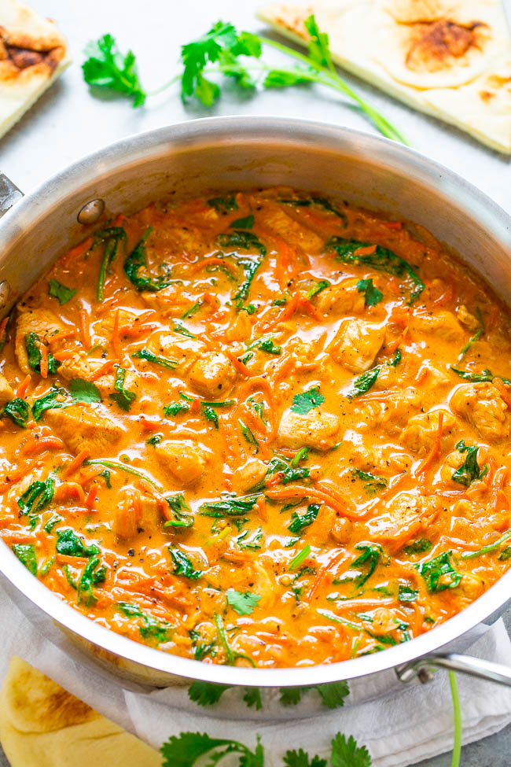

Thai Chicken Curry
Homepage

Description
One skillet curry based on Thai red curry paste.
Ingredients
- 2 to 3 tbsp coconut oil (olive oil may be substituted)
- 1 medium/large sweet Vidalia or yellow onion, diced small
- 1 lb boneless skinless chicken breast, diced into bite-sized pieces
- 3 cloves garlic, finely minced or pressed
- 2 to 3 teaspoons ground ginger or 1 tablespoon fresh ginger, finely chopped
- 2 teaspoons ground
- one 13-ounce can coconut milk (I used lite; full-fat will deliver a richer/thicker result)
- 1 to 1 1/2 cups shredded carrots
- 1 to 3 tablespoons Thai red curry paste, or to taste (curry powder may be substituted, to taste)
- 1 teaspoon kosher salt, or to taste
- 1/2 teaspoon freshly ground black pepper, or to taste
- about 3 cups fresh spinach leaves
- 1 tablespoon lime juice
- 1 to 2 tablespoons brown sugar, optional and to taste
- 1/4 cup fresh cilantro, finely chopped for garnishing (basil may be substituted
- rice, quinoa, or naan, optional for serving
Steps
- To a large skillet, add the oil, onion, and sauté over medium-high heat until the onion begins to soften about 5 minutes; stir intermittently.
- Add the chicken and cook for about 5 minutes, or until chicken is done; flip and stir often to ensure even cooking.
- Add the garlic, ginger, coriander, and cook for about 1 minute, or until fragrant; stir frequently.
- Add the coconut milk, carrots, Thai curry paste, salt, pepper, and stir to combine. Reduce the heat to medium, and allow mixture to gently boil for about 5 minutes, or until liquid volume has reduced as much as desired and thickens slightly.
- Add the spinach, lime juice, and stir to combine. Cook until spinach has wilted and is tender, about 1 to 2 minutes. Taste and optionally add brown sugar, additional curry paste, salt, pepper, etc. to taste.
- Evenly sprinkle with the cilantro and serve immediately. Curry is best warm and fresh but will keep airtight in the fridge for up to 1 week.